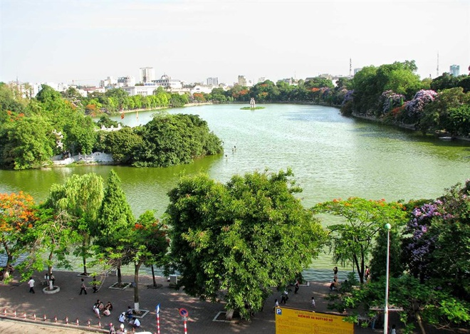

Du lịch Việt Nam
Hồ Hoàn Kiếm
Còn được gọi là Hồ Gươm, là hồ nước ngọt tự nhiên của thành phố Hà Nội, hồ có diện tích khoảng 12 hecta. Trước kia, hồ còn có các tên gọi là: hồ Lục Thủy, hồ Thủy Quân, hồ Tả Vọng và Hữu Vọng, tên gọi Hoàn Kiếm xuất hiện vào đầu thế kỷ XV gắn với truyền thuyết vua Lê Thái Tổ trả gươm báu cho Rùa thần.
Hồ Hoàn Kiếm được gắn liền với truyền thuyết huyền sử, là biểu tượng khát khao hòa bình, đức văn tài võ trị của dân tộc Việt Nam. Do vậy, đã có rất nhiều văn nghệ sĩ đã lấy hình ảnh Hồ Gươm làm nền tảng cho các tác phẩm của mình.